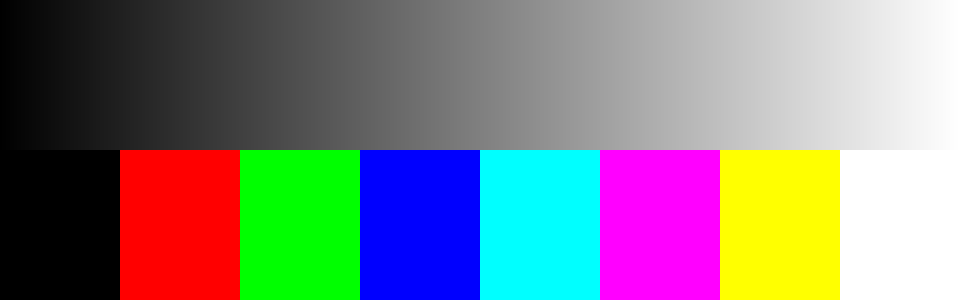
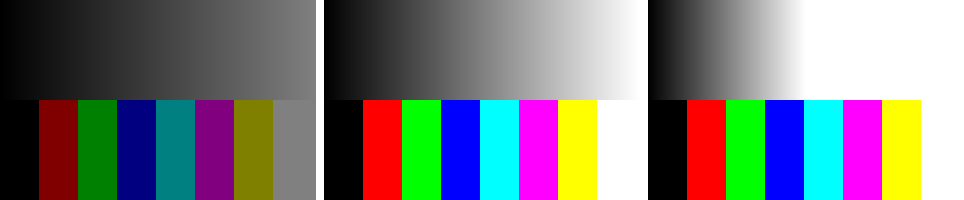

Between the moment light strikes a camera sensor and the moment a JPEG lands on your disk, a photograph passes through a dozen distinct transformations. Each one is comprehensible. Most are, at heart, a few lines of arithmetic applied to every pixel. And yet the pipeline as a whole — what happens, in what order, and why — is understood end to end by almost nobody outside camera engineering teams and computer vision labs.
This book walks the whole way: from photons to JPEG bytes, one stage at a time, with working code at every step.
0.1Why this book exists
The material that explains this territory splits into two camps that don’t talk to each other. Academic textbooks treat demosaicing, color science, and tone mapping as scattered topics inside a much broader survey of vision research — you get the math, but rarely the pipeline as a pipeline: the order of operations, the reason each stage exists, the way a choice made early compounds into an artifact three stages later. Practical sources — patents, raw-processor source code, photography forums — are written to document or to argue, not to teach.
This book is for the reader in between: someone who can code but isn’t a computer vision researcher. A hobbyist photographer who wants to know what a raw file actually contains. A developer building photo tools. An ML engineer who needs intuition for what an image signal processor does to training data. A darktable or RawTherapee user who wants to know what the sliders actually move.
The core promise is simple: every algorithm in this book is implemented in plain, explicit code with no hidden operations. If something happens to a pixel, you can watch it happen, line by line. No library call stands in for a concept; no vectorized one-liner asks you to take the arithmetic on faith.
Two commitments follow from that promise, and they shape everything about how the book is built.
The first is that the book runs on a simulated camera. Part 1 builds a small synthetic forward model — scenes described as reflectance spectra, a fictional lens with known flaws, a sensor with known noise — and every worked example in the book photographs that. The payoff is something real photography can never give you: ground truth. When we demosaic, we can measure the error against the true full-color scene, because we rendered it. When we white-balance, we know the true illuminant, because we chose it. Every reader gets identical inputs and identical results, whatever camera they own or don’t.
The second commitment is a rule about code, and it deserves its own section — because it resolves a tension that would otherwise quietly undermine the whole project.
0.2The toolkit
Everything in this book is written in ordinary Python. Not because Python is fast — it is spectacularly not — but because it reads almost like the pseudocode it is standing in for, and because you certainly have it.
The main explanatory code uses no libraries at all beyond the standard library. There is no NumPy in the teaching tier of this book. That is a deliberate, slightly extreme choice, and it exists because array programming — for all its power — lets an author hide a concept inside a broadcast. image * gain is a fine line of production code and a terrible explanation; it works equally well whether or not you understand what it does. A for loop over rows and columns cannot pull that trick.
What the code operates on is one small type, and here it is in full — the entire data model of the book:
code/pxp/image.pyclass Image:
"""A picture: a grid of pixels, each a list of channel values.
Values are floats. In a linear-light image, 0.0 is no light and
1.0 is the brightest value we intend to represent; nothing stops
a value from going above 1.0 or below 0.0 mid-pipeline, and that
freedom is deliberate — clipping is a decision, made explicitly,
at the moment we encode for output.
"""
def __init__(self, width, height, channels=3, fill=0.0):
self.width = width
self.height = height
self.channels = channels
self.pixels = [
[[fill] * channels for _ in range(width)]
for _ in range(height)
]
def get(self, x, y):
"""The pixel at column x, row y: a list of channel values."""
return self.pixels[y][x]
def set(self, x, y, values):
"""Replace the pixel at column x, row y."""
self.pixels[y][x] = list(values)
A picture is a grid; a pixel is a list of channel values; the values are floats. Notice what the docstring says about 0.0 and 1.0: they are conventions, not walls. A pipeline works in linear light for most of its length, and intermediate values are allowed to wander out of range — a highlight can hold 2.7 through half the pipeline. Clipping is a decision, and this book makes it exactly once, at the honest place: output.
Which brings us to output. To look at our images we write PNG files, and — in keeping with the house rules — we write them ourselves, from scratch. A minimal PNG is less mysterious than its reputation: a signature, a header, the pixel rows compressed with zlib, an end marker.
code/pxp/image.pydef write_png(image, path):
"""Save an Image as an 8-bit PNG, from scratch.
No imaging library: a PNG is a signature, a header chunk, the
pixel rows compressed with zlib, and an end marker. Channel
values are clipped to [0, 1] here — output encoding is exactly
the place where clipping is honest — and scaled to 0..255.
"""
grayscale = image.channels == 1
rows = []
for y in range(image.height):
row = bytearray([0]) # 0 = "no filter" for this row
for x in range(image.width):
for value in image.get(x, y):
clipped = min(1.0, max(0.0, value))
row.append(round(clipped * 255))
rows.append(bytes(row))
raw = b"".join(rows)
def chunk(tag, data):
return (struct.pack(">I", len(data)) + tag + data
+ struct.pack(">I", zlib.crc32(tag + data)))
header = struct.pack(">IIBBBBB", image.width, image.height,
8, # bits per channel
0 if grayscale else 2, # color type
0, 0, 0)
with open(path, "wb") as f:
f.write(b"\x89PNG\r\n\x1a\n")
f.write(chunk(b"IHDR", header))
f.write(chunk(b"IDAT", zlib.compress(raw, 9)))
f.write(chunk(b"IEND", b""))
That function is the only place in the entire book where channel values are forced into range, and the only place they are quantized to 8 bits. (It is also a quiet preview of Part 9, where its bigger sibling — a from-scratch JPEG encoder — becomes the book’s final act.) With these two pieces, the toolkit can produce its first image:

Image class and written by our own write_png. This unglamorous test card, grown into full spectral color charts and detail targets, is the seed of the simulated camera in Part 1.If the ramp looks like it brightens unevenly — too dark for too long, then rushing to white — you have just observed, with your own eyes, the difference between linear light and your display’s expectations. That observation is Part 7’s opening argument, and we made it with sixty lines of standard-library Python.
One honest caveat: matplotlib is genuinely useful for interactive work — poking at pixel values, comparing crops side by side — and the text will occasionally mention it as an optional convenience. But nothing in the book depends on it. Every figure printed in these pages is a PNG produced by the book’s own code, regenerated from scratch on every build. If a figure and its listing ever disagreed, the book would fail to build.
0.3The two-tier contract
Now for the tension. A 24-megapixel photograph has roughly seventy-two million channel values. Plain Python, sweeping that with nested loops, runs the simplest operations in seconds — and the serious algorithms of Parts 4 and 8 in days. A book that only ever processed 256-pixel-wide crops would keep its promise of clarity and quietly abandon its other promise: that you finish with a pipeline you can run on your own raw files.
So every pipeline stage in this book exists in two forms:
- The reference implementation — plain loops, explicit arithmetic, the form the chapter explains. It lives in the
pxppackage and runs on small crops, which is exactly the scale where you can also print pixel values and check the math by hand. - The pipeline implementation — the same arithmetic restated for the machine, using NumPy (and, where it earns its keep, numba). It lives in
pxp.fastand is what the full-resolution pipeline actually runs.
The second tier never introduces a concept. It is always presented after the idea is understood, always as the same arithmetic, faster. Here is the smallest possible example — exposure adjustment, which in linear light is nothing but a multiplication by \(2^{\text{stops}}\). The reference form:
code/pxp/tone.pydef exposure(image, stops):
"""Brighten or darken an image by whole photographic stops.
One stop is a doubling: +1 doubles every channel value, -1
halves it. In linear light that is the entire story — exposure
is a single multiplication applied uniformly to every value.
"""
gain = 2.0 ** stops
out = Image(image.width, image.height, image.channels)
for y in range(image.height):
for x in range(image.width):
pixel = image.get(x, y)
out.set(x, y, [value * gain for value in pixel])
return out
And its pipeline twin:
code/pxp/fast/tone.pydef exposure(pixels, stops):
"""Exposure as one array multiplication.
Identical arithmetic to the reference tier's three nested loops:
every value, times two-to-the-stops. NumPy applies the multiply
to the whole (H, W, C) array in one sweep.
"""
return pixels * np.float64(2.0 ** stops)
Three nested loops became one multiplication sign, and nothing else changed — not the numbers, not the order of operations on each value, nothing. But you do not have to trust that sentence, and this is the point of the section:
The contract
For every stage, a test constructs an image, runs both tiers, and asserts the outputs are identical — not approximately equal, identical. The tests ship with the book’s code and run on every build of the book. When a chapter says “the same eleven lines of arithmetic, sped up,” that claim has been checked mechanically, not editorially.
The test for exposure, in full:
code/tests/test_two_tier.py@unittest.skipUnless(HAVE_NUMPY, "pipeline tier requires NumPy")
class TestTwoTierExposure(unittest.TestCase):
def test_exposure_tiers_identical(self):
img = checker_image()
for stops in (-2.0, -0.5, 0.0, 1.0, 1.7):
reference = pxp.tone.exposure(img, stops)
pipeline = pxp.fast.from_array(
pxp.fast.exposure(pxp.fast.to_array(img), stops))
self.assertEqual(reference.pixels, pipeline.pixels,
f"tiers diverge at stops={stops}")
And here is the reference implementation earning its first figure — the test scene from Figure 0.1 pushed a stop down and a stop up:

write_png — our first clipped highlight, and an honest preview of why Part 7 spends a whole section on recovering them.Look closely at the −1 panel: the white patch has become the same middle gray as the clipped region’s neighbors, and the saturated primaries have dimmed without changing hue. Exposure in linear light preserves color; it only scales energy. That one figure quietly carries three later chapters — and it cost us a multiplication.
0.4The simulated camera, previewed
The test card above was built by hand, patch by patch. Part 1 replaces it with something better: a small synthetic camera — a forward model that starts from physical descriptions and produces raw files.
Its scenes are not grids of RGB values but reflectance spectra under a chosen illuminant — daylight, tungsten, or one deliberately awkward spiky fluorescent kept around to cause trouble in Part 5. Its lens is fictional but flawed in precisely known ways: a little distortion, a little vignetting, a touch of chromatic aberration, each set by coefficients we choose. Its sensor has per-channel spectral sensitivities, photon shot noise, read noise, a black level, and — crucially — a Bayer color filter array, so that like every real camera it records only one color value per pixel and leaves the rest for us to reconstruct.
None of it is pretty, and none of it is meant to be. The simulator is a measurement instrument, not a renderer: flat patches, ramps, and analytic targets, built so that at every stage of the pipeline there is a right answer to compare against. When the book claims an algorithm is better, the claim will come with a number.
From here the path is fixed, and it is the same path your camera walks a thousand times a day: photons to a noisy mosaic (Part 2), white balance before the mosaic is unwoven — an ordering that matters more than almost anyone tells you (Part 3) — demosaicing (Part 4), color (Part 5), the lens’s sins undone (Part 6), tone (Part 7), detail and noise (Part 8), and finally the JPEG encoder (Part 9), at which point every byte in the output file is a byte you understand. Part 10 then loads a real raw file from a real camera and runs your pipeline on it.
It is a long way from light to JPEG. Let’s take the first step.